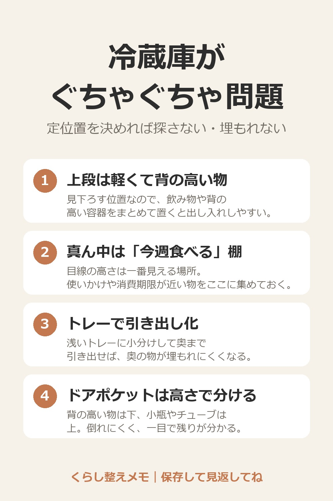

冷蔵庫がぐちゃぐちゃ問題

1. 上段は軽くて背の高い物
見下ろす位置なので、飲み物や背の高い容器をまとめて置くと出し入れしやすい。
2. 真ん中は「今週食べる」棚
目線の高さは一番見える場所。使いかけや消費期限が近い物をここに集めておく。
3. トレーで引き出し化
浅いトレーに小分けして奥まで引き出せば、奥の物が埋もれにくくなる。
4. ドアポケットは高さで分ける
背の高い物は下、小瓶やチューブは上。倒れにくく、一目で残りが分かる。
5. 1列だけ空けておく
作り置きや来客の差し入れ用に空き場所を作ると、詰め込みで崩れるのを防げる。